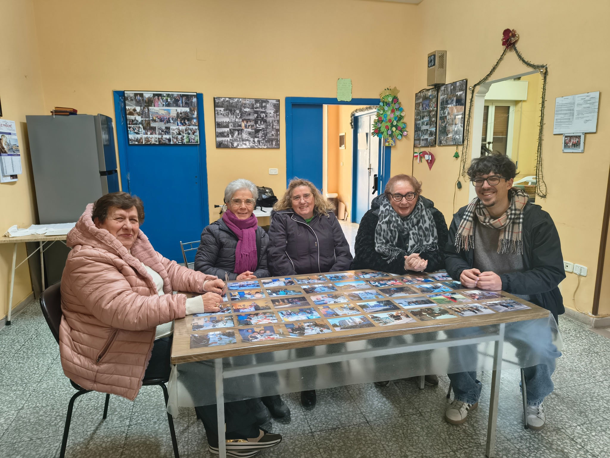
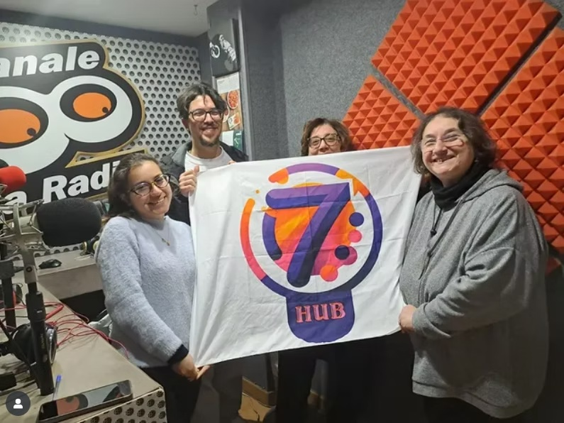

Backup di Comunità.
Salvare la memoria prima che si perda.
Un progetto culturale e territoriale che nasce dall’ascolto diretto delle comunità pugliesi e dall’urgenza di non perdere le storie custodite dalle persone.
Da un’esigenza concreta: non perdere le storie che abitano i territori.
Backup di Comunità nasce dall’esigenza concreta di non perdere le storie che abitano i territori.
Nel tempo, attraversando città e paesi della Puglia, è emersa con forza una consapevolezza semplice: molte memorie, legate al lavoro, alla vita quotidiana, alle tradizioni e ai cambiamenti sociali, rischiano di scomparire insieme alle persone che le custodiscono.
Il progetto prende forma dall’ascolto diretto delle comunità e dall’incontro con uomini e donne che hanno vissuto trasformazioni profonde dei luoghi in cui abitano. Racconti spesso affidati solo alla parola, tramandati in modo informale, raramente documentati, ma fondamentali per comprendere l’identità dei territori.
Da questa urgenza nasce l’idea di creare un “backup” della memoria, ispirandosi al linguaggio digitale: salvare ciò che conta prima che venga perso. Non un archivio freddo o distante, ma un processo di ascolto, relazione e restituzione, capace di dare valore alle storie ordinarie e ai saperi quotidiani.
Backup di Comunità si sviluppa così come un progetto che unisce persone, luoghi e strumenti semplici. Le testimonianze vengono raccolte direttamente nei contesti di vita – case, strade, luoghi di lavoro – per mantenere un legame autentico con il territorio. La tecnologia diventa un mezzo, non un fine, al servizio della conservazione e della condivisione della memoria.
Nel tempo, il progetto si è strutturato come un modello aperto, pensato per crescere, aggiornarsi e coinvolgere nuove comunità. Una pratica culturale che nasce dal basso e che continua a evolversi grazie alle relazioni costruite sul territorio e all’impegno di ETS 7HUB nel mantenerne viva la continuità.

Un archivio vivo, non statico.
Backup di Comunità non si limita a conservare. Costruisce relazioni, restituisce contenuti e crea continuità culturale nel tempo.
Quattro nuclei che raccontano il senso di Backup di Comunità.
Ascolto e raccolta delle memorie
Il progetto parte dall’ascolto diretto delle persone. Anziani, lavoratori, commercianti e cittadini raccontano storie di vita, di lavoro e di comunità attraverso testimonianze orali raccolte casa per casa, strada per strada, negozio per negozio.
Territori e comunità
Backup di Comunità attraversa luoghi diversi della Puglia, mettendo in dialogo realtà urbane e contesti rurali. Taranto e San Paolo di Civitate rappresentano due anime storicamente connesse del territorio, raccontate attraverso le voci di chi le ha vissute.
Archiviazione e memoria condivisa
Le testimonianze raccolte vengono organizzate in un archivio digitale accessibile, pensato per conservare la memoria e renderla consultabile nel tempo. L’archivio non è statico, ma aperto a nuovi contributi e aggiornamenti.
Restituzione e continuità
Le storie tornano alla comunità attraverso momenti pubblici di restituzione e strumenti semplici come i QR code. ETS 7HUB si impegna a mantenere vivo il progetto anche dopo il finanziamento, aggiornando l’archivio e ampliando la rete di testimonianze.
Incontri, fotografie e storie condivise dalle comunità.

Un linguaggio digitale per custodire ciò che è umano.
Chiamarlo “backup” non è un vezzo tecnologico: significa riconoscere che la memoria collettiva ha bisogno di cura, strumenti semplici e continuità. È qui che 7Hub unisce territorio, cultura e innovazione civica.